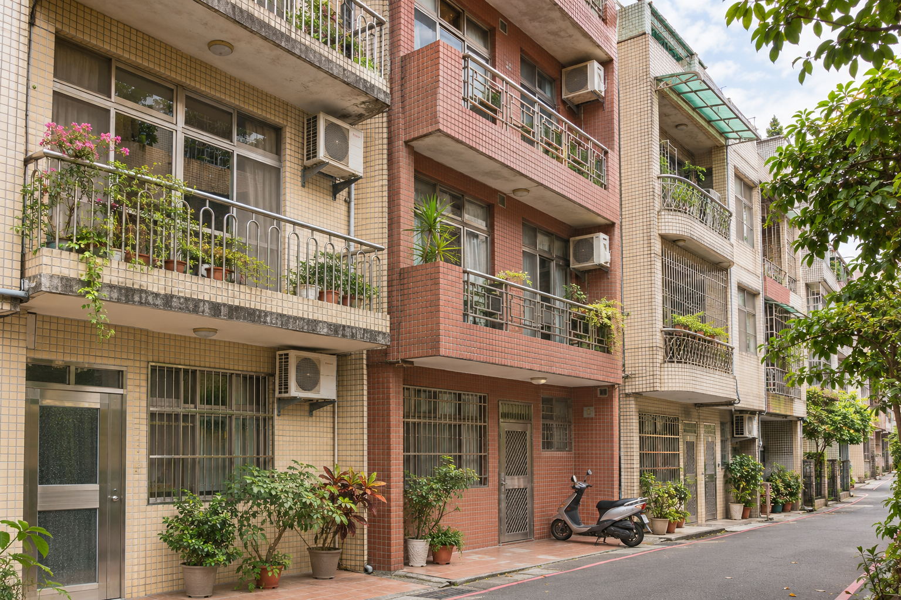

LIN DA / HOME VIEWING
打開門之前
先問問自己：如果住進這裡，平日晚上和假日早晨會怎麼過？
這本看房誌收錄三個虛構案例，附上每種格局可以在現場確認的細節。
 虛構住宅 · AI 生成影像
虛構住宅 · AI 生成影像
可從目錄選擇格局，或在相簿內用左右方向鍵翻頁。

LIN DA / HOME VIEWING
先問問自己：如果住進這裡，平日晚上和假日早晨會怎麼過？
這本看房誌收錄三個虛構案例，附上每種格局可以在現場確認的細節。

公寓 · 3 房 2 廳 · 約 29 坪
客廳通往前陽台，三間房保留居家工作與家人同住的彈性。
看房時比較不同時段的光線與通風，也確認鋁窗和陽台排水。

公寓 · 2 房 1 廳 · 約 19 坪
客廳和餐區連在一起，房間可依生活習慣分配。
看房時帶上家具尺寸，確認擺放後的走道寬度與插座位置。

透天 · 前院與多樓層空間
一樓是共用空間，樓上保留房間與較安靜的角落。
看房時走一次進出車庫和上下樓的動線，看看雨天是否方便。